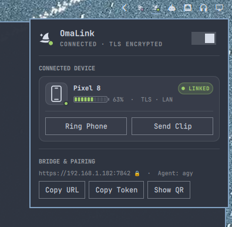
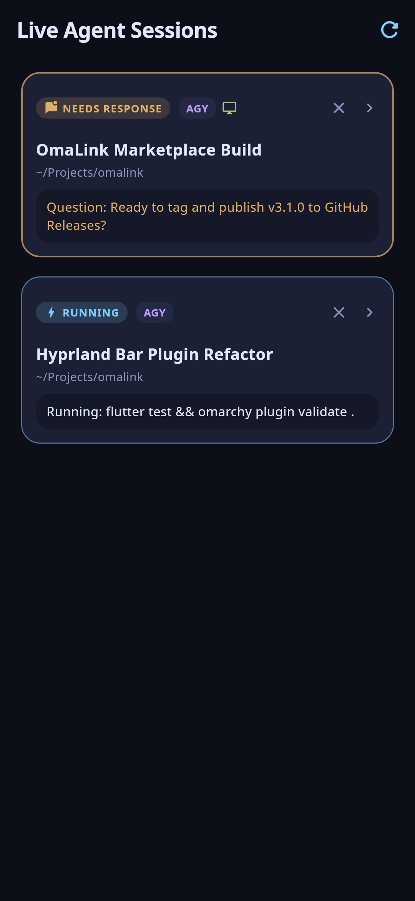
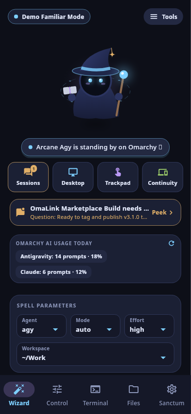
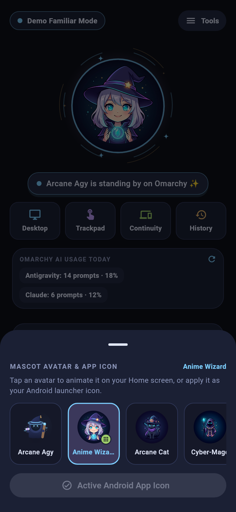
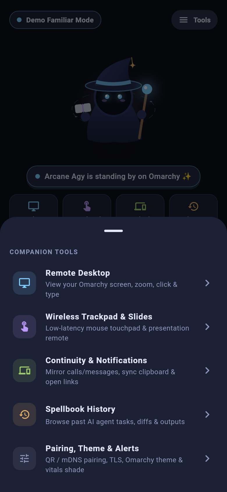
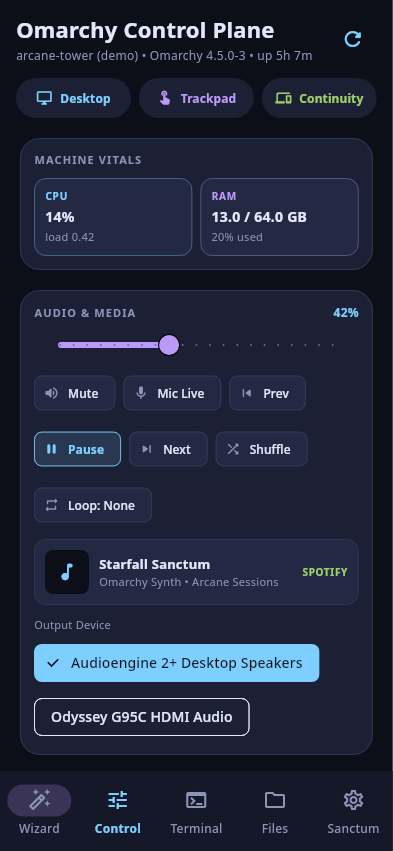
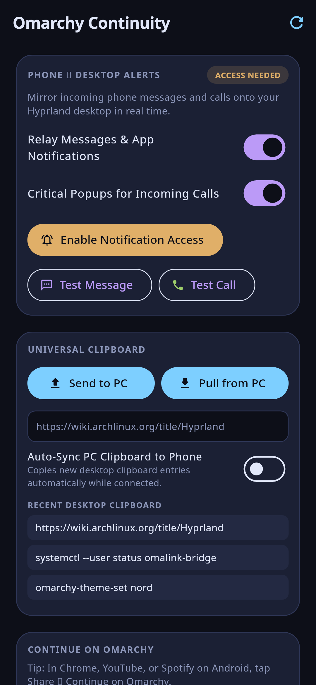
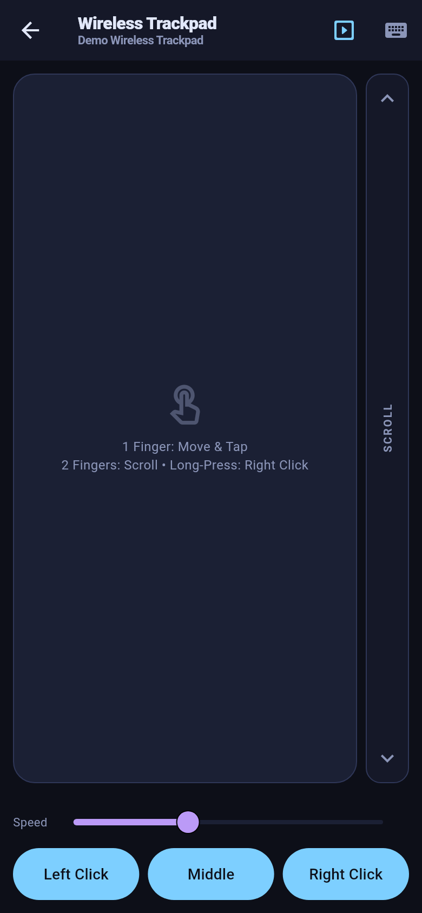
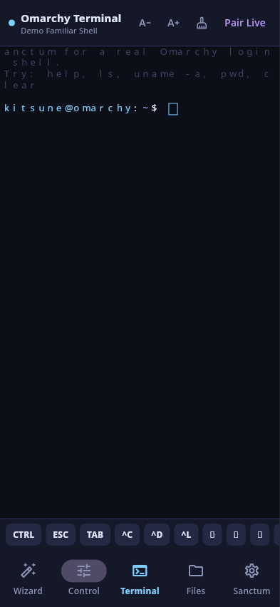
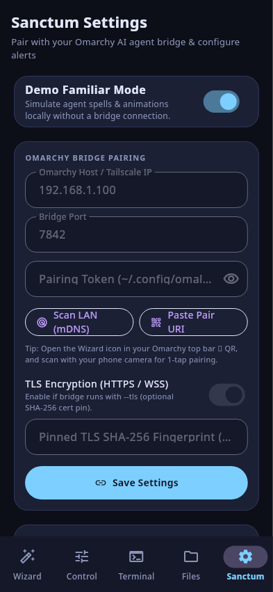

Command Omarchy.From your phone.
OmaLink brings Android Continuity, Wayland Remote Desktop, Wireless Trackpad, OS Control, and Live AI Agent Sessions to Omarchy Linux — powered by a pure Python 3.11+ bridge, an Omarchy top-bar plugin, and pinned TLS encryption with zero cloud relays.
omarchy plugin add https://github.com/M30W-M1X/omalink.git --enable
No account. Zero tracking. Digest-verified standalone install →
One encrypted link for Continuity, Remote Control, and AI Agents.
Built natively for Hyprland and Omarchy Linux with zero pip dependencies and live Omarchy theme syncing across every screen on Android.
Peek, approve & reply
Auto-discovers open agy and claude sessions, alerts your phone when an agent asks a question, and lets you reply or continue builds with 1 tap.
Native Continuity
Omarchy top-bar Connected Device card with real phone name & 10-segment battery bar, mirrored notifications with inline quick-reply, clipboard sync, and Find My Phone with 1-tap stop.
Desktop, Trackpad & PTY
Wayland screen streaming (grim), wireless trackpad & slide remote, PipeWire audio & MPRIS media controls, interactive xterm PTY shell, and 2-way file explorer.
Top-bar native on Omarchy. Theme-synced on Android.
OmaLink watches ~/.config/omarchy/current/theme/colors.toml and re-themes the entire Android app & terminal palette whenever you switch Omarchy themes.

Dedicated Connected Device card right in your Omarchy top bar showing your phone's real name, 10-segment visual battery gauge, Ring Phone, Send Clip, inline notification replies, and auto-hiding pairing QR code.

Discover open desktop agent sessions, get high-priority Android alerts on ask_question prompts, and reply or close sessions directly from your phone.








Direct device-to-desktop link. No middleman server.
Every notification, clipboard snippet, keystroke, file transfer, and agent reply travels directly between your phone and your Omarchy machine.
No cloud backend exists. Your phone discovers your desktop over local mDNS (_omalink._tcp), a scanned QR code (omalink://pair), or your private Tailscale IP.
Zero tracking, zero analytics. Read our full plain-English Android Privacy Policy for exact details on every optional Android permission.
Hardened for real LAN and desktop use.
Every transport boundary, file path, confirmation dialog, and release artifact fails closed by default.
Install in one command, or verify every SHA-256 digest.
Requires Python 3.11+ on Omarchy Linux (zero pip packages needed) and Android 7.0+ (API 24+).
omarchy plugin add https://github.com/M30W-M1X/omalink.git --enable
curl -fsSLO https://github.com/M30W-M1X/omalink/releases/download/v3.7.1/install.sh && \ curl -fsSLO https://github.com/M30W-M1X/omalink/releases/download/v3.7.1/SHA256SUMS && \ echo "60a72faf43a06d12794fec6aa154a0845421b54d07da1ce416ef912966365cfc install.sh" | sha256sum -c - && \ grep ' install.sh$' SHA256SUMS | sha256sum -c - && \ bash install.sh --ref 3165c9e24ca89d14657089e9099b6738fb3a7670
curl -fsSLO https://github.com/M30W-M1X/omalink/releases/download/v3.7.1/app-release.apk && \ curl -fsSLO https://github.com/M30W-M1X/omalink/releases/download/v3.7.1/SHA256SUMS && \ grep ' app-release.apk$' SHA256SUMS | sha256sum -c -
1-Tap QR or LAN mDNS
Click the OmaLink wizard icon in your Omarchy top bar to view the live pairing QR code, scan it with your phone camera, or tap Scan LAN (mDNS) in Sanctum Settings.
Allow bridge port on LAN
If UFW is enabled on your Omarchy machine, allow port 7842/tcp on your local network: sudo ufw allow 7842/tcp.
Frequently asked questions.
Does OmaLink send any of my data to external servers or track usage?
No. OmaLink has zero telemetry, zero analytics, zero ads, and no cloud backend. All communication stays strictly between your phone and your paired Omarchy desktop over your LAN or private Tailscale network. See our Privacy Policy.
Can I use OmaLink away from home?
Yes. If both your Omarchy desktop and Android phone are on the same Tailscale tailnet, OmaLink automatically includes your Tailscale IP in the pairing QR code so you can connect securely from anywhere.
How does Find My Phone work?
Click Ring Phone in the Omarchy top-bar panel to trigger an alarm sound on your linked phone. Just like Apple Find My iPhone, a high-priority heads-up notification and in-app Find My Phone Alert dialog appear immediately so you can silence it with 1 tap.
Which AI coding agents are supported?
OmaLink supports launching, monitoring, and resuming agy (Antigravity), claude (Claude Code), codex, kimi, and opencode, plus live session discovery, peek, and interactive reply for open agy and claude sessions.
Your Omarchy desktop, in your pocket.
Encrypted by default, theme-synced live, and 100% open source.